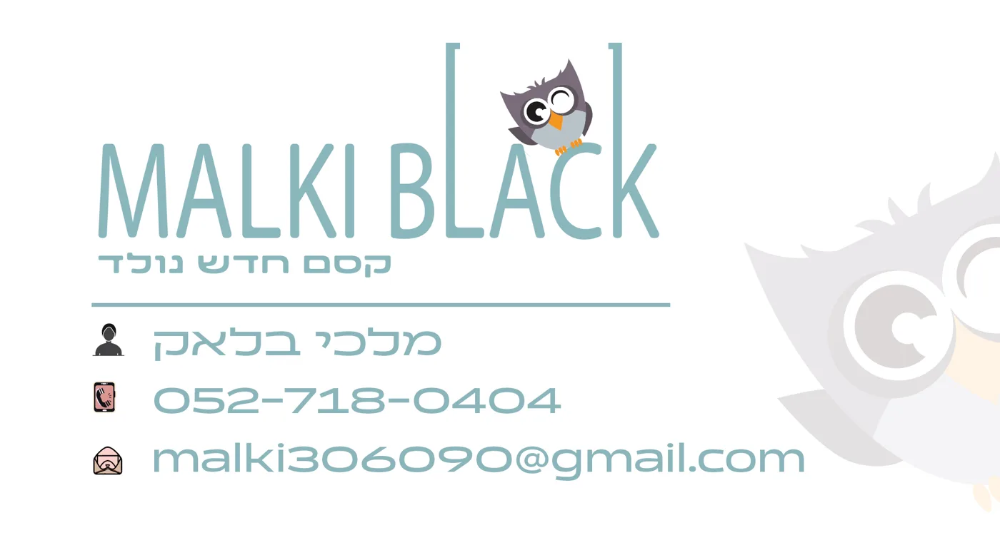
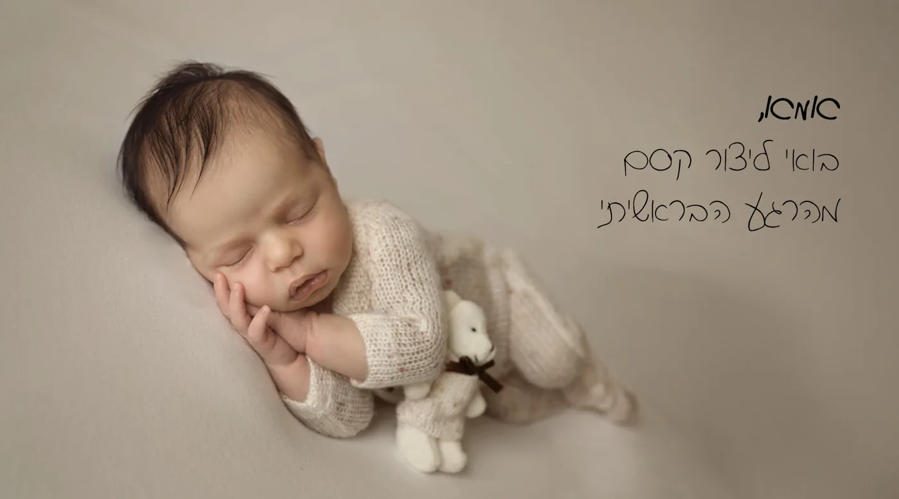
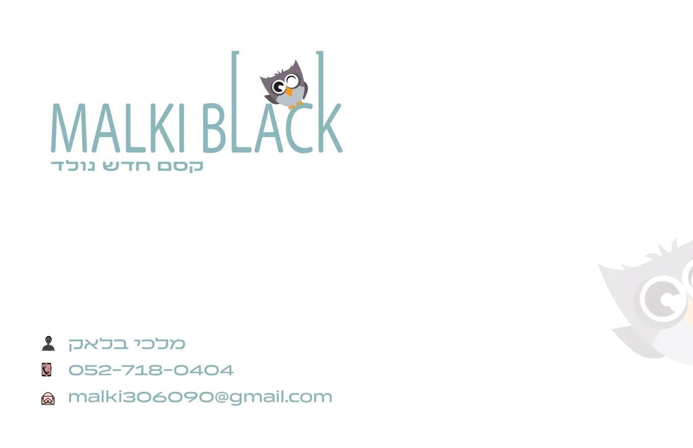
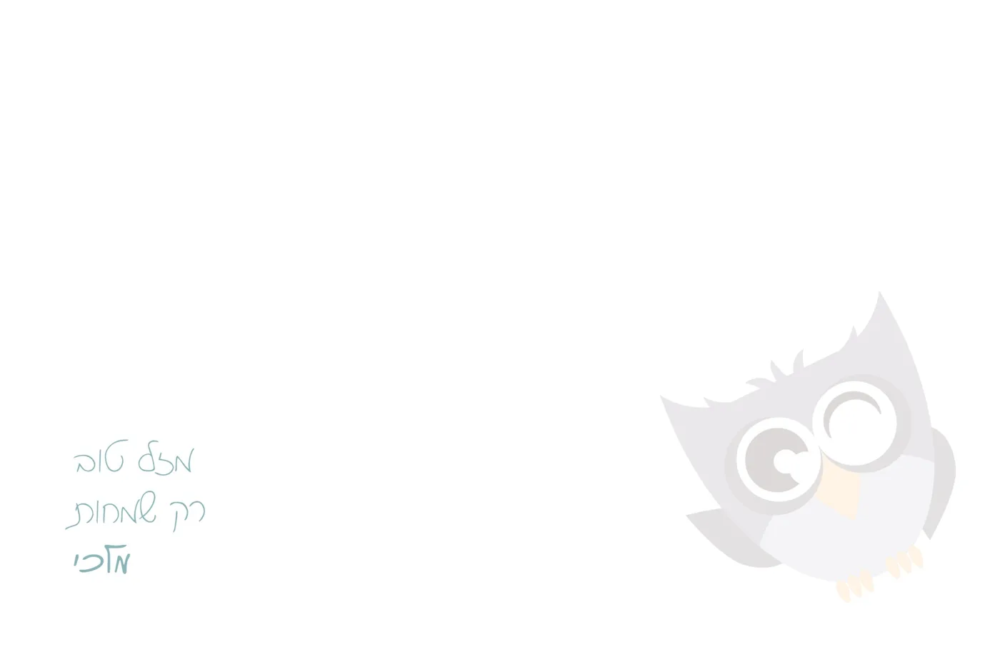
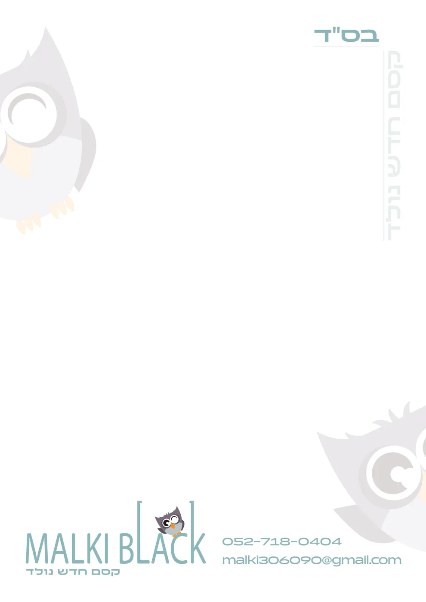
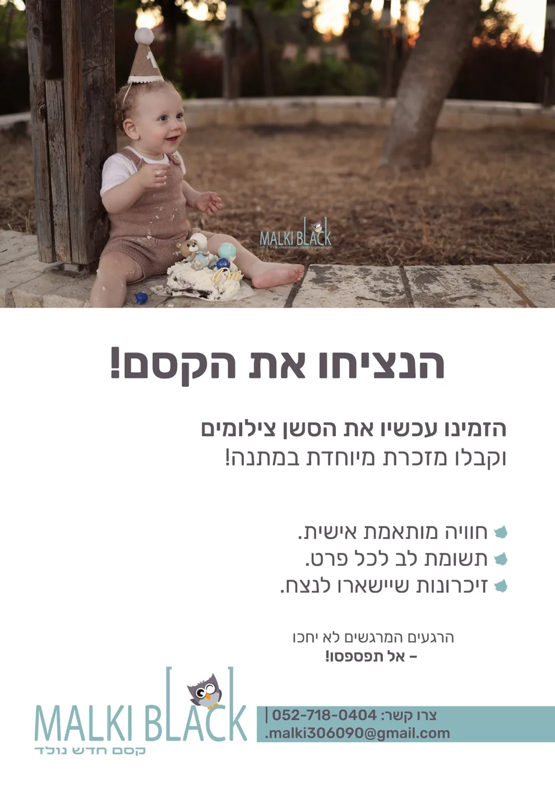

הרעיון
בניתי את הלוגו מאפס, בהתאמה מלאה אליה. לא תבנית ולא שינוי של משהו קיים, אלא שפה שנולדה ממה שהיא אוהבת. שני דברים היו ברורים מההתחלה: הצבע הסלדון שהיא מאוד אהבה, והינשוף, שהיה חייב להיכנס. האתגר היה לחבר ביניהם למותג שמרגיש חם ומקצועי בבת אחת, כי הורים מכניסים צלמת לרגע הכי רגיש שלהם.
הינשוף שלה
היא מאוד אוהבת ינשופים, אז הוא לא יכול היה להיות רק קישוט. מצאתי לו בית בתוך השם: הוא יושב בין סוגריים, כמו בתוך עדשה שתופסת רגע, וקורץ. בשאר החומרים הוא חוזר בגדול ובשקיפות, כסימן מים עדין.
הסלדון במרכז
הצבע שהיא בחרה הפך לעמוד השדרה של המותג. סביבו בניתי פלטה רכה: אפור סגלגל לינשוף ונגיעה של כתום בעיניים ובכפות הרגליים. מתאים לתינוק, בלי ללכת על ורוד־תכלת צפוי.
קסם חדש נולד
הסלוגן מחבר את הלידה לרגע הצילום, וחוזר בכל חומר: על הכרטיס, לאורך נייר המכתבים, ובכתב יד על הצד של התינוק.
המותג בשימוש
אותה שפה, בכל נקודת מגע: מהרגע שההורים מקבלים כרטיס ביקור ועד שהם מקבלים ברכה עם התמונות.





פלייר שיווקי
פלייר לסשן צילומי גיל שנה: תמונה אחת חזקה למעלה, כותרת קצרה, שלוש הבטחות ופרטי קשר שאי אפשר לפספס. הצבע של המותג מסמן את מה שחשוב, ואת כל השאר עושה המרווח.

כשפניתי לנתי היה לי רק מחשבה קלושה מה אני רוצה בלוגו. ונתי, ביצירתיות מקסימה, הפיק לי מיתוג קולע ומותאם שהתאהבתי בו לגמרי.
צריכים מיתוג שמרגיש כמו העסק שלכם?
בואו נדבר בוואטסאפ